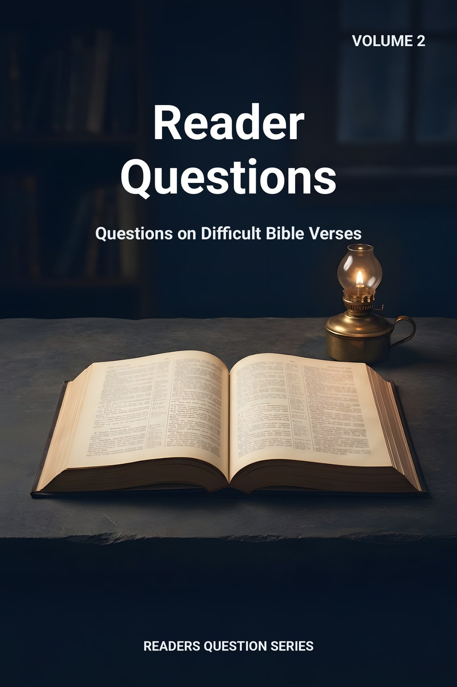
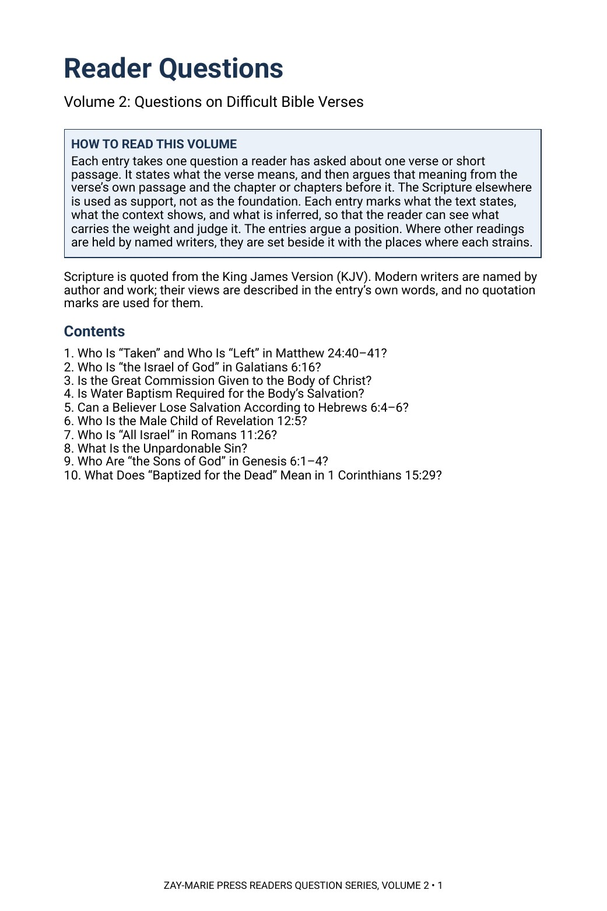
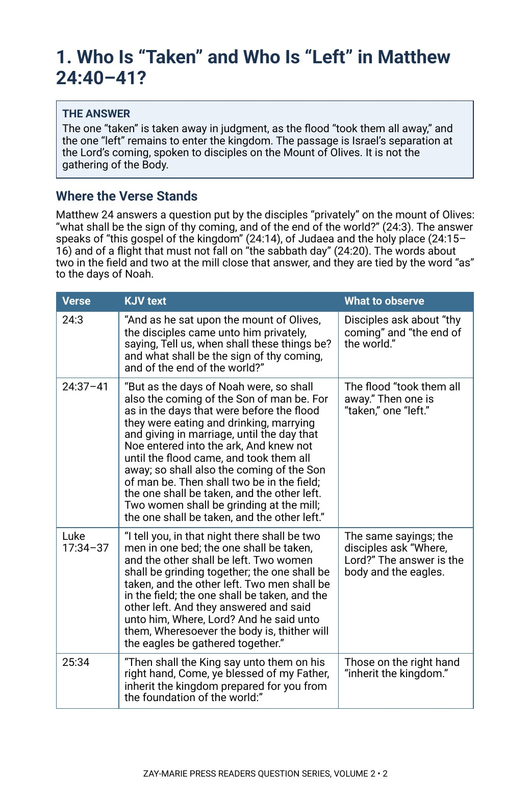

Reader Questions
Questions on Difficult Bible Verses
What does this verse mean, and what in its own chapter says so?
A reader asks about one verse: who is taken in Matthew 24, who is the Israel of God, to whom was the Great Commission given. Each entry gives the answer first, then walks back through the passage and the chapter before it to show why the verse means what it does, and marks every point as stated, shown by the context or inferred.
The entries argue a position and say so. Where named modern writers read a verse differently, their views are set beside the answer, with the place where each reading strains.
One Verse, Argued from Its Own Setting
Each entry answers one question about one verse or short passage. It does not begin with a theory and look for verses to fit; it begins with the verse, reads it in its own passage and in the chapter or chapters before it, and lets the rest of Scripture support what the context shows.
It is the second volume of the Readers Question Series. It is shorter than a Commentary Volume and takes one question at a time, and it is a different kind of book from a Digital Study, which reports what a passage says and leaves the question open. Scripture is quoted from the King James Version throughout. Each entry gives the whole reasoning for its answer.
Related Reading
Digital Studies
Study 29 — One Taken and the Other Left Reports the sayings as written; the entry argues who is taken.
Study 35 — Who Is the Israel of God? Reports Galatians 6:16 as written; the entry argues who the phrase names.
Study 66 — Matthew 28:18–20 Reports the commission as written; the entry argues whom it was given to.
Commentary Series
Typology, Volume 2 — Prophetic Separation Argues the separation at the Lord’s coming across the canon.
Covenantal, Volume 2 — Abraham’s Seed Argues who the seed is, with Galatians 3 and 6.
Acts, Volume 1 — What the Twelve Were Told, and Did Argues what the Twelve were commissioned to do.
Doctrinal Packets
Doctrinal Packet — Matthew Interprets the book through its key passages in five pages.
Doctrinal Packet — Hebrews Interprets the book through its key passages in five pages.
Doctrinal Packet — Romans Interprets the book through its key passages in five pages.
Ten Questions, Ten Passages
The Coming and the Separation
Follow Matthew 24 from the disciples’ question to the days of Noah and ask who is taken and who is left, then read Revelation 12 and the 144,000 side by side.
Israel and the Body
Read Galatians 6 against the letter’s own argument, and Romans 11 as written to Israel, and ask who “the Israel of God” and “all Israel” are.
A Commission and a Baptism
Set Matthew 28 beside Matthew 10 and Acts 1, then ask what Paul says of baptism in 1 Corinthians 1 and 12 and what Romans 6 and Colossians 2 describe.
A Warning in Hebrews
Read Hebrews 2 to 6 for the people addressed and the signs they had received before asking what falling away means.
A Sin Said in Galilee
Follow Matthew 12 from the healing to the Pharisees’ saying and ask what the Lord says was done against the Spirit and when.
Angels and the Dead
Hold Genesis 6, Job, 2 Peter and Jude together on the sons of God, and read 1 Corinthians 15 for who is baptized for the dead.
The Ten Questions, Answered in Brief
Open a question to read its short answer. These are summaries, not the complete answers. The complete answer to each question, with the passage in its context, the evidence, the other readings and the modern writers behind them, is in the full entry in this volume.
1. Who Is “Taken” and Who Is “Left” in Matthew 24:40–41?
The one “taken” is taken away in judgment, as the flood “took them all away,” and the one “left” remains to enter the kingdom. The passage is Israel’s separation at the Lord’s coming, spoken to disciples on the Mount of Olives. It is not the gathering of the Body.
This is the short answer only. The complete answer is the full entry in Reader Questions, Volume 2 (go to the purchase panel).
2. Who Is “the Israel of God” in Galatians 6:16?
“The Israel of God” is believing Israel: the prophetic remnant of ethnic Jews who have embraced Messiah and remain members of Israel’s Prophecy Program, within Israel’s prophetic identity, named beside the Body and not as the Body. They are not absorbed into the Body, and their identity, destiny and program membership stay intact.
This is the short answer only. The complete answer is the full entry in Reader Questions, Volume 2 (go to the purchase panel).
3. Is the Great Commission Given to the Body of Christ?
The commission of Matthew 28:18–20 was spoken to the eleven on a mountain in Galilee, after Matthew 10 sent them to “the lost sheep of the house of Israel.” It widens the field to the nations and ties the work to the kingdom commands and “the end of the world.” The Body’s commission is Paul’s, the ministry of reconciliation, and Paul says Christ “sent me not to baptize.”
This is the short answer only. The complete answer is the full entry in Reader Questions, Volume 2 (go to the purchase panel).
4. Is Water Baptism Required for the Body’s Salvation?
No. The Body is saved by grace through faith, and its one baptism is the work of the Spirit, “by one Spirit are we all baptized into one body.” The passages that join water to salvation are spoken in Israel’s setting, where baptism attends the kingdom message.
This is the short answer only. The complete answer is the full entry in Reader Questions, Volume 2 (go to the purchase panel).
5. Can a Believer Lose Salvation According to Hebrews 6:4–6?
No, because the passage is not a warning to the Body. Hebrews is written to Israel, and the warning is Israel’s danger of rejecting the Messiah after receiving the kingdom’s signs (“the powers of the world to come”), which is to crucify the Son afresh. The Body’s security rests on promises the passage never touches: “neither death, nor life … shall be able to separate us.”
This is the short answer only. The complete answer is the full entry in Reader Questions, Volume 2 (go to the purchase panel).
6. Who Is the Male Child of Revelation 12:5?
The male child is the company of the 144,000, Israel’s firstfruits remnant, and not the person of Christ. The child is “caught up unto God,” a word of removal used of those taken up, and the same company reappears with the Lamb on mount Sion in Revelation 14:1–5 as “firstfruits.” The rod of iron is shared with overcomers in Revelation 2:26–27.
This is the short answer only. The complete answer is the full entry in Reader Questions, Volume 2 (go to the purchase panel).
7. Who Is “All Israel” in Romans 11:26?
“All Israel” is the nation of Israel, saved at the coming of the Deliverer, after “the fulness of the Gentiles” has come in. It is not the Body, not “spiritual Israel” and not the whole company of the elect from every nation. Romans 9–11 is spoken to Israel and concerns Israel.
This is the short answer only. The complete answer is the full entry in Reader Questions, Volume 2 (go to the purchase panel).
8. What Is the Unpardonable Sin?
It is the blasphemy against the Holy Ghost spoken in Matthew 12: the leaders’ ascribing the King’s works, done by the Spirit of God, to Beelzebub. It was said of Israel’s generation in the presence of the King, and the sentence reaches “neither in this world, neither in the world to come.”
This is the short answer only. The complete answer is the full entry in Reader Questions, Volume 2 (go to the purchase panel).
9. Who Are “the Sons of God” in Genesis 6:1–4?
The sons of God are angelic beings. The same title is used of them in Job 1:6 and 38:7, and Peter and Jude set angels who sinned beside the flood and Sodom. The Lord’s words in Matthew 22:30 describe people in the resurrection and do not decide what angels could do before.
This is the short answer only. The complete answer is the full entry in Reader Questions, Volume 2 (go to the purchase panel).
10. What Does “Baptized for the Dead” Mean in 1 Corinthians 15:29?
It names a practice of some at Corinth, spoken of as “they,” and Paul uses it as an argument without commending it or commanding it. The passage is part of his proof that the dead rise. The Body has no ordinance of baptism on behalf of the dead.
This is the short answer only. The complete answer is the full entry in Reader Questions, Volume 2 (go to the purchase panel).
Read the Word in Its Context
Matthew 24:40–41
“Then shall two be in the field; the one shall be taken, and the other left. Two women shall be grinding at the mill; the one shall be taken, and the other left.”
Galatians 6:16
“And as many as walk according to this rule, peace be on them, and mercy, and upon the Israel of God.”
Matthew 28:19–20
“Go ye therefore, and teach all nations, baptizing them in the name of the Father, and of the Son, and of the Holy Ghost: Teaching them to observe all things whatsoever I have commanded you: and, lo, I am with you always, even unto the end of the world. Amen.”
Hebrews 6:4–6
“For it is impossible for those who were once enlightened, and have tasted of the heavenly gift, and were made partakers of the Holy Ghost, And have tasted the good word of God, and the powers of the world to come, If they shall fall away, to renew them again unto repentance; seeing they crucify to themselves the Son of God afresh, and put him to an open shame.”
Revelation 12:5
“And she brought forth a man child, who was to rule all nations with a rod of iron: and her child was caught up unto God, and to his throne.”
Romans 11:26
“And so all Israel shall be saved: as it is written, There shall come out of Sion the Deliverer, and shall turn away ungodliness from Jacob:”
Matthew 12:31
“Wherefore I say unto you, All manner of sin and blasphemy shall be forgiven unto men: but the blasphemy against the Holy Ghost shall not be forgiven unto men.”
Genesis 6:2
“That the sons of God saw the daughters of men that they were fair; and they took them wives of all which they chose.”
How Each Entry Works
Each entry marks what the text states, what the context shows, and what is inferred, so that the reader can see what carries the weight and judge it.
The entries argue a position, and the other readings are set beside it with the places where each strains.
Preview the Volume Before You Purchase
Click any page to enlarge it for reading.


How to Read This Volume
See the plan of every entry and the ten questions the volume answers.


The First Entry Opens
See an entry begin with its answer, then the question’s setting and the passages quoted in full from the King James Version.
Ten Answers in One Volume
29-Page Digital PDF
Cover and a fully numbered interior.
Ten Full Entries
Each question answered from the verse’s own passage and the chapter before it.
Marked Evidence
Every point marked as stated, shown by the context, or inferred.
KJV Tables
The passages quoted in full, beside what to observe in each.
Other Readings
Named modern writers set beside the answer, with where each strains.
What It Means
What each answer means for the reader.
Related Reading
Studies, commentaries, parables and packets on the same passages.
Modern Writers Referred To
Every writer named, listed by author and work.
Reader Questions, Volume 2
29-page digital PDF · For personal use